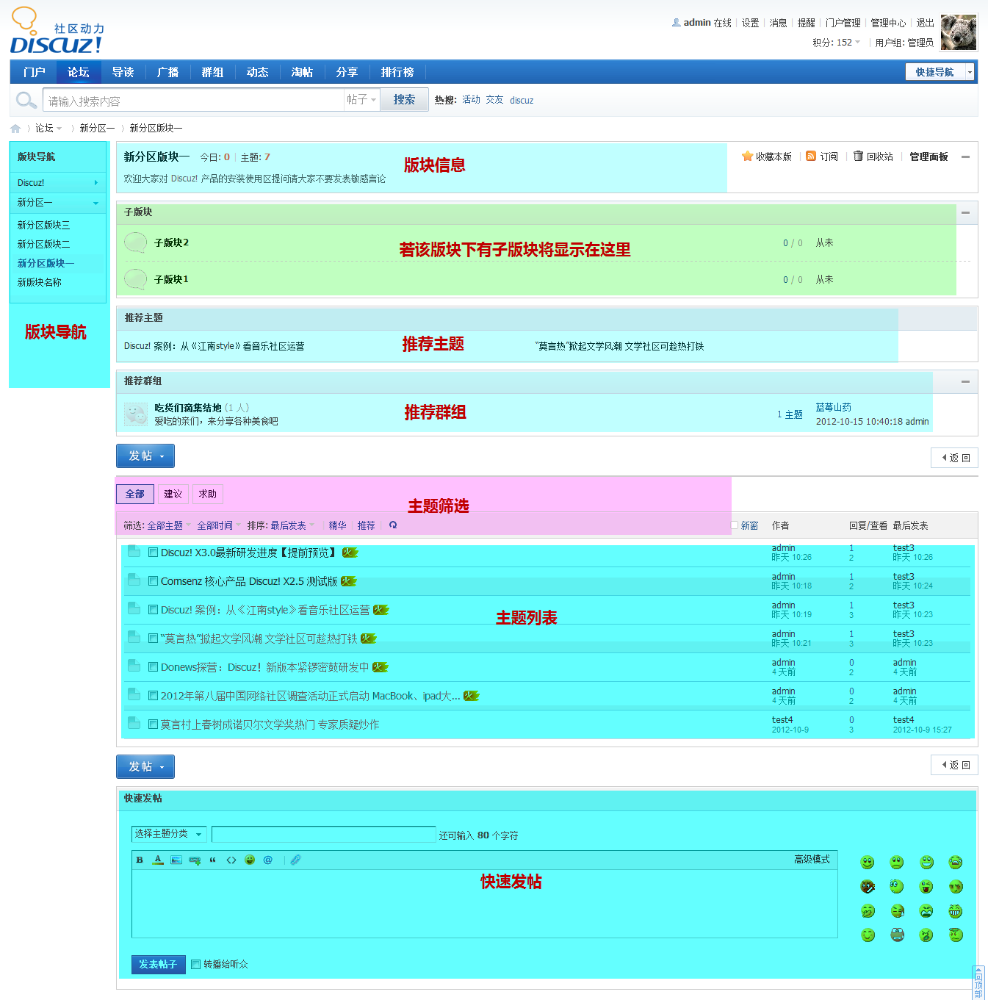
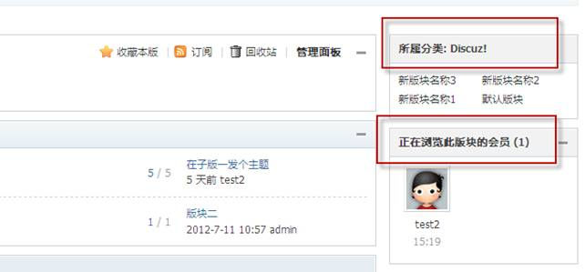

论坛版块
论坛版块是指点击版块名进入的版块详细内容页面，其最基本的元素是该版块下的帖子列表、版块的信息与子版块以及主题筛选功能；同时页面还提供了推荐主题、推荐群组以及版块导航和右边栏来辅助丰富页面信息。如下图所示：
下面我们来看详细内容：
一、版块信息
显示本版块的信息，让用户迅速了解到本版块的版主、简介以及规则、今日发帖数及总的主题量，管理员可以再在后台 论坛=>版块管理=>版块编辑=>基本设置 下设置
二、论坛子版
若版块下有子版块，将在版块信息下方显示本版的子版块列表，若无，则不显示此项
三、推荐主题
推荐主题是指管理员手动推荐主题，或是根据精华帖、评价指数、主题热度、发帖时间等设定推荐规则，自动按规则生成推荐主题的列表，将结果显示在这里，可以让用户很容易看到这些主题，增加这些主题的浏览量。推荐主题功能需在 后台论坛=>版块管理=>版块编辑=>扩展设置 下开启， 并设定规则，若不开启，则不显示此项
四、推荐群组
管理员在群组的首页可以将群组推荐到版块，达到宣传群组的功能，在此调取显示管理员推荐到该版块的群组，若无则不显示此项。
五、主题筛选器
主题筛选器给用户提供了便捷的帖子筛选功能，用户可根据主题分类、主题类型与发表时间范围以及是否精华、是否推荐来筛选出感兴趣的主题，并可以按发帖时间、回复/查看、最后发表以及热门来给筛选出的主题排序
六、帖子列表
显示本版块下的主题列表，每条内容以主题标题、作者、发表日期、回复/查看数以及最后发表人形式显示，点击帖子标题、作者、最后发表可以查看相应内容
七、版块导航
以树状结构显示各分区名称以及分区下的版块名称，若将后台 界面=>界面设置=>主题列表页 下的左侧导航宽度设置为“0”，或是在后台 论坛=>版块管理=>版块编辑=>扩展设置 下开启了右边栏，将不显示版块导航
八、右边栏
若在后台 论坛=>版块管理=>版块编辑=>扩展设置 下开启了版块的右边栏，在页面右边栏会默认显示所属分类（版块的所属分类以及该分类下的版块）以及正在浏览此版块的会员，此处可以通过diy聚合其他信息
九、快速发帖
快速发帖功能提供了简洁模式的编辑器，目的是为方便用户快速发帖，若用户在登录状态下可以直接输入帖子标题、内容快速发帖，省去点击发帖跳转到发帖页面的麻烦。此功能需在后台 界面=>界面设置=>主题列表页 下启用